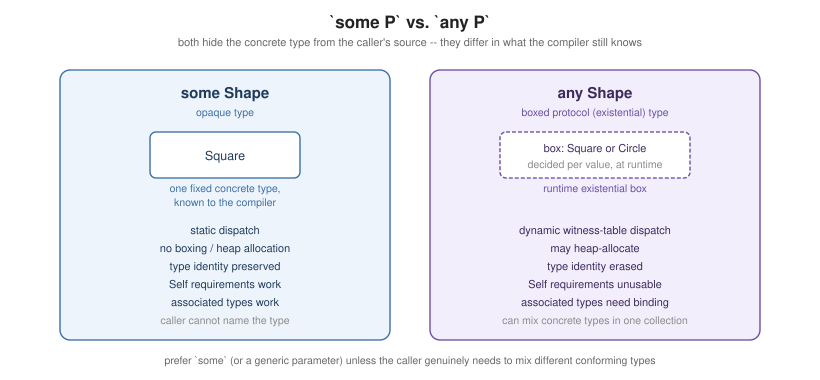

Opaque and Boxed Protocol Types
|
This content was generated with the assistance of AI and should be verified against the official documentation before being relied on in production. |
Swift has three ways to write "a value conforming to protocol P" as a type, for a protocol P: a generic parameter (see
Generics), some P (an opaque type), and any P (a boxed
protocol type, formally an existential). This page covers the latter two — what problem each solves, what
each costs at runtime, and how to choose between them and an ordinary generic.
The Problem Opaque Types Solve
protocol Shape {
func area() -> Double
}
struct Square: Shape {
let side: Double
func area() -> Double { side * side }
}
struct Circle: Shape {
let radius: Double
func area() -> Double { .pi * radius * radius }
}
// func makeShape() -> Shape { Square(side: 2) } // legal, but erases which concrete Shape came backA function that wants to return some conforming Shape without committing to which one has, historically, only
any Shape (or a plain protocol return type, which means the same thing) available — and that erases the
concrete type entirely, which matters whenever the caller needs it back for something the protocol itself does
not expose (equality against another value of the exact same concrete type, for instance). An opaque type
exists to return a value that is guaranteed to be one single concrete type, chosen entirely by the function’s
implementation, while hiding exactly which one from the caller.
Returning some P
func makeSquare(side: Double) -> some Shape { // the caller only ever sees "some Shape"...
Square(side: side) // ...but every call returns the *same* concrete type: Square
}
let a = makeSquare(side: 2)
let b = makeSquare(side: 3)
// a and b are both, in reality, Square -- the compiler knows this even though the caller's code cannot name itsome Shape as a return type promises the caller a single, specific, compiler-known concrete type — just one
whose name is not spelled out — and every return statement in that function must produce a value of that
same concrete type (an if/else returning Square on one branch and Circle on the other does not compile).
Because the underlying type is fixed and known to the compiler, some Shape retains everything a concrete type
gives up under erasure: static dispatch (no protocol-witness indirection), no heap allocation forced by the
protocol type itself, and — crucially — type identity, covered next.
Boxed Protocol (Existential) Types: any P, and Their Runtime Cost
let shapes: [any Shape] = [Square(side: 2), Circle(radius: 1)] // a heterogeneous mix -- impossible with `some`
for shape in shapes {
print(shape.area()) // dispatches dynamically -- the concrete type differs per element
}any Shape — a boxed protocol type, or existential — names not one concrete type but "whichever type
conforms, decided per value at runtime", which is exactly what lets shapes mix Square and Circle in the
same array. That flexibility has a real runtime cost: a value stored as any P is boxed (heap-allocated when it
doesn’t fit inline in a small fixed-size buffer), every member access goes through dynamic witness-table
dispatch rather than being resolved statically, and the compiler can no longer specialize the calling code for
one concrete type the way it can for some P or an ordinary generic parameter.
some vs. any: Type Identity, Associated Types, and Self Requirements

protocol Container {
associatedtype Item // a protocol with an associated type...
}
// let boxed: any Container // ...cannot be named this way at all before Swift 5.7's `any` for PATs
func makeContainer() -> some Container { // ...but `some` has always worked, since the concrete type is fixed
Stack<Int>()
}
protocol Comparable2 {
static func < (lhs: Self, rhs: Self) -> Bool // a `Self` requirement
}
// let values: [any Comparable2] = [] // legal to write, but < cannot be called on two boxed values:
// the box only guarantees "conforms", not "both sides are the same type"The two differ in three concrete ways. Type identity: some P guarantees the compiler (and, indirectly, the
caller, since two some P values from the same call site are known to share a type) that every value really is
one specific type, while any P deliberately discards that information. Associated types: a protocol with an
associatedtype (a "protocol with associated types", or PAT) can always be used with some, since the concrete
type — and therefore its associated type — is fixed and known; using it with any requires either binding the
associated type explicitly (any Container<Item == Int>) or accepting that operations depending on it are
unavailable. Self requirements: a requirement like Comparable's < that takes or returns Self cannot be
called through an any box at all (the box cannot guarantee both operands are the same concrete type), whereas
some — and an ordinary generic parameter — both preserve enough information for it to work.
Opaque Parameter Types
func sum(_ values: some Sequence<Int>) -> Int { // shorthand for a generic parameter, in parameter position too
values.reduce(0, +)
}some P is not only a return-type feature: written on a parameter, it is exactly the lightweight generic-
parameter syntax covered in Generics — the caller still chooses
the concrete type (unlike in return position, where the function chooses it), so an opaque parameter type is,
in every respect that matters, an ordinary generic parameter spelled without a name.
Implicitly Opened Existentials
protocol Shape2 { func area() -> Double }
func double<S: Shape2>(_ shape: S) -> Double { shape.area() * 2 } // a generic function requiring a concrete S
let anyShape: any Shape2 = Square(side: 2)
print(double(anyShape)) // legal since Swift 5.7: the box is "opened" so S can bind to its real typeBefore SE-0352, passing an any P value to a generic function expecting a concrete, conforming type did not
compile, since the generic function needs one real type to substitute for its parameter and the box, by design,
hides which one that is. Implicitly opened existentials let the compiler recover that real type at the call
site itself: double(anyShape) opens the box, discovers the value’s actual dynamic type, and calls double as
if it had been invoked directly on a value of that concrete type — entirely automatically, with no syntax at the
call site beyond an ordinary function call.
Choosing Between some, any, and Explicit Generics
A generic parameter and some in parameter position are, semantically, the same choice already covered in
Generics; the decision that matters on this page is between
some and any, and it comes down to one question — does the calling (for a parameter) or the returning (for
a result) code need to mix different concrete conforming types at the same call site or in the same
collection? If every value really is, or must be treated as, one single concrete type, prefer some (or a plain
generic parameter): it is faster, allocates nothing extra, and preserves Self requirements and associated
types. Reach for any only when heterogeneity is the actual requirement — a mixed-type array or dictionary
value, a protocol stored as a property whose concrete type genuinely varies over the property’s lifetime, or a
boundary (a plugin API, a delegate slot) that must accept whichever conforming type shows up at runtime.
Layout and Cost: What some and any Compile To
some and any look like two spellings of "a thing that conforms to a protocol", but they compile to very
different code. The bookshelf below defines a Lendable protocol with two conforming structs and uses it four ways.
protocol Lendable {
var title: String { get }
var loanDays: Int { get }
}
struct Book: Lendable {
let title: String
var loanDays: Int { 21 }
}
struct Dvd: Lendable {
let title: String
var loanDays: Int { 7 }
}
// some: ONE hidden concrete type, chosen by the implementation; the caller cannot see which.
func featured() -> some Lendable {
Book(title: "Dune")
}
// any: a box that can hold ANY conforming type, decided at run time.
func mixedShelf() -> [any Lendable] {
[Book(title: "Emma"), Dvd(title: "Alien")]
}
// Generic parameter: the caller picks the type, the compiler specialises the body.
func totalDays<L: Lendable>(_ items: [L]) -> Int {
items.reduce(0) { $0 + $1.loanDays }
}
// some as a parameter is shorthand for an anonymous generic parameter.
func shout(_ item: some Lendable) -> String { item.title.uppercased() }
let a = featured()
print(a.title, type(of: a))
print(shout(a), shout(Dvd(title: "Alien")))
let mixed = mixedShelf()
print(mixed.map { $0.title })
print(mixed.map { type(of: $0) })
print(totalDays([Book(title: "A"), Book(title: "B")]))
// totalDays(mixed) // error: type 'any Lendable' cannot conform to 'Lendable'
// A function with an opaque result must return the SAME type on every path.
// func pick(_ flag: Bool) -> some Lendable { flag ? Book(title: "x") : Dvd(title: "y") }
// error: result values in '? :' expression have mismatching types 'Book' and 'Dvd'
// Primary associated types let you constrain what is inside the box.
func titles(of items: some Collection<any Lendable>) -> [String] { items.map(\.title) }
print(titles(of: mixed))
print(MemoryLayout<Book>.size, MemoryLayout<any Lendable>.size)Dune Book
DUNE ALIEN
["Emma", "Alien"]
[Bookshelf.Book, Bookshelf.Dvd]
42
["Emma", "Alien"]
16 40The two compile-time errors in the comments were produced by the compiler: a generic function cannot take
[any Lendable] because the box type does not conform to the protocol it holds, and an opaque result cannot return
Book on one path and Dvd on another because there is exactly one hidden type.
The Existential Container
A value of type any Lendable is stored in an existential container. For a protocol without class
constraints it holds a small inline buffer for the value (three words), a pointer to the dynamic type’s metadata and a
pointer to the protocol witness table, the list of the conformance’s implementations of title and loanDays.
Values that do not fit in the buffer are allocated on the heap and referenced from it. The last line of the
output shows the consequence: a Book that wraps one String occupies 16 bytes, while the same value
inside any Lendable occupies 40 bytes (a 24-byte buffer plus two pointers). Calling loanDays through
the box loads the witness table, finds the function pointer and calls it indirectly, which the optimizer
cannot inline.
With some Lendable or a generic parameter there is no box: the compiler knows the real type (the generic
body is specialised per type when profitable), stores the value directly and calls it statically.
Choosing in Practice
| Need | Use | Why |
|---|---|---|
one return type, callers need only the interface |
|
no box, keeps value semantics, compiler-checked single type |
heterogeneous array or property |
|
different concrete types in one collection |
two parameters must be the same concrete type |
generic |
|
constrain an element type |
|
primary associated types |
Pitfalls
-
Writing
anyis optional for a plain protocol in the Swift 6 language mode (the bare name still compiles), but required once the protocol has associated types orSelfrequirements; spell it out anyway, as it marks every place that pays for a box and theExistentialAnyupcoming feature makes it mandatory. -
Two
any Lendablevalues are not known to hold the same concrete type, so a function that needs both arguments to be the same type must be generic rather than take two boxes. -
somein a stored property type needs an initial value, as inlet books: some Collection<Book> = [Book(title: "A")], because the hidden type is inferred from it.
See Also
-
Generics —
some Pas parameter-position generic-parameter syntax, and generic constraints in full. -
Protocols — protocols as types, associated types, and protocol composition.
-
Type Casting and Reflection —
is/as?for downcasting out of ananybox, andAny/AnyObject.
References
TSPL: Opaque and Boxed Protocol Types; SE-0335, SE-0352.
-
The Swift Programming Language — Opaque and Boxed Protocol Types.
-
Swift.org — Announcing Swift 5.7 (existential
anyand implicitly opened existentials both shipped in 5.7).